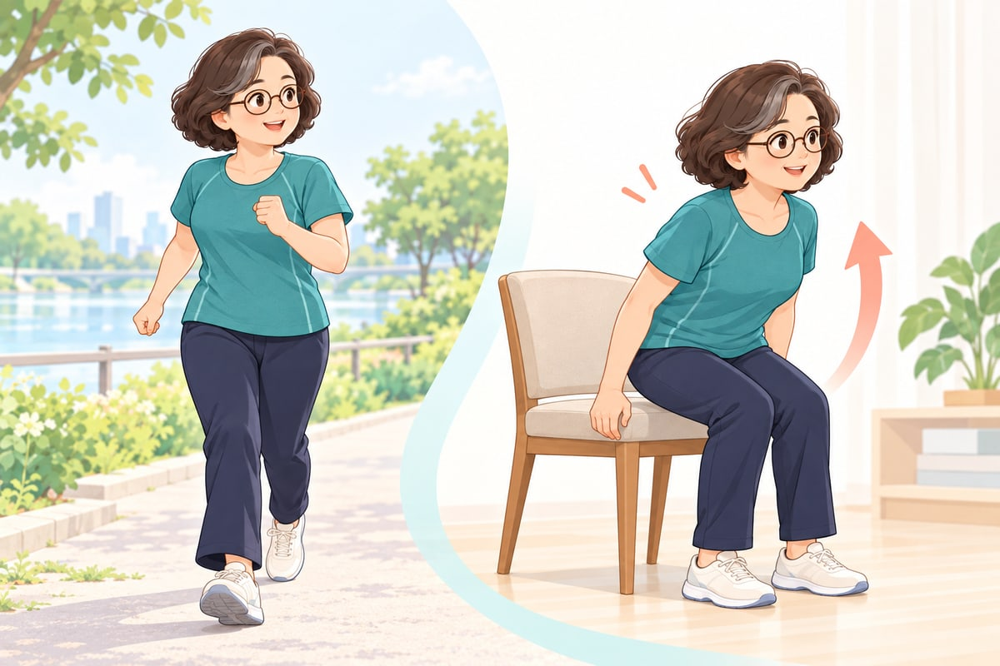
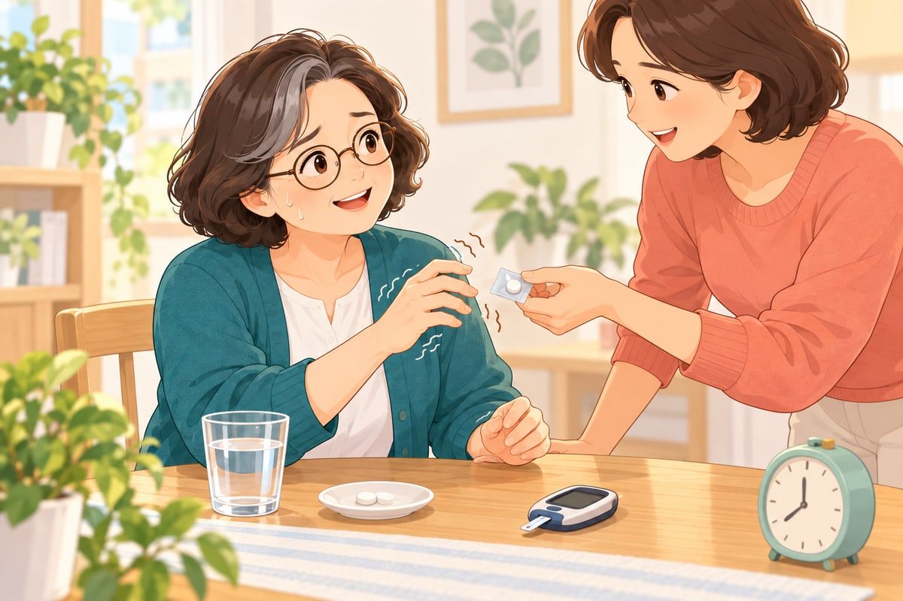
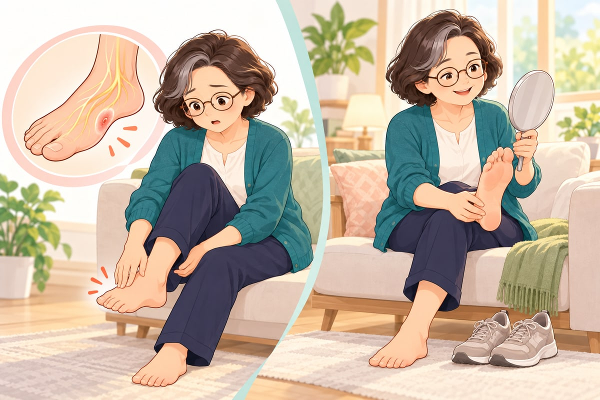

혈당과 함께 살아가기 이 책은 성인 전단계·2형 당뇨병의 일반적인 교육 자료입니다. 진단·처방·개인별 부작용 확률이나 약물 용량을 정하지 않습니다. 복약 변경은 의료진과 논의하세요.
01 / 09 · 근거 검토일 2026-10-04
🩸 당뇨병, 몸속에서 무슨 일이 생길까요? 혈당·인슐린·검사 수치를 이해하는 첫걸음.
✅ 이것만 기억하세요 혈당은 피 속 포도당의 양입니다. 인슐린은 몸이 포도당을 쓰도록 돕습니다. 진단 기준(공복혈당 126 mg/dL 이상, HbA1c 6.5% 이상)과 나의 관리 목표는 다릅니다. 목표는 의료진과 함께 정하세요. 검사 결과에는 공복·식후·당부하검사 중 무엇이었는지 함께 적어 두세요. 인슐린은 근육과 지방세포의 포도당 이용을 돕습니다. 열쇠 비유는 이해를 돕는 그림이며, 모든 세포가 같은 방식으로 작동하지는 않습니다. 이해를 돕는 교육용 일러스트 혈당과 인슐린 1형과 2형은 다릅니다 진단 기준과 관리 목표를 구분하세요 혈당과 인슐린 혈당은 혈액 속 포도당의 농도입니다. 탄수화물은 소화되어 포도당 등을 만들고, 간도 공복에 포도당을 공급합니다. 췌장의 인슐린은 간의 포도당 생산을 줄이고 근육·지방세포의 포도당 이용을 돕습니다.
근거 펼쳐보기 1형과 2형은 다릅니다 1형은 보통 자가면역으로 인슐린을 만드는 세포가 손상되어 인슐린 치료가 필요합니다. 성인에게도 생깁니다. 2형은 인슐린 저항성과 분비 기능 저하가 함께 관여하며, 유전·나이·체지방·생활환경 등 여러 요인이 작용합니다.
근거 펼쳐보기 진단 기준과 관리 목표를 구분하세요 검사실 공복혈당 100–125 mg/dL, 75g 경구당부하검사 2시간 혈당 140–199 mg/dL, 또는 HbA1c 5.7–6.4%는 전단계 범위입니다. 당뇨병 기준은 각각 126 이상, 200 이상, 6.5% 이상입니다. 경구당부하검사는 평소 식후혈당 측정과 다릅니다.
명백한 증상·고혈당 위기가 없다면 보통 확인 검사가 필요합니다. 빈혈 등은 HbA1c 해석에 영향을 줄 수 있습니다. 진단은 의료진이 검사 결과를 종합해 내립니다.
오늘 할 행동 검사표에 공복·식후·당부하검사 중 무엇인지 적어 두세요. 예외와 주의점 많은 성인에서 HbA1c 7% 미만을 고려하지만, 국내 지침·나이·저혈당 위험 등에 따라 목표가 다릅니다. 진단 기준을 내 목표로 그대로 쓰지 마세요.
근거 펼쳐보기 02 / 09 · 근거 검토일 2026-10-04
🌱 당뇨병 전단계, 지금 시작할 관리 예방·체중·재검사를 한 번에 정리합니다.
✅ 이것만 기억하세요 당뇨병 전단계는 관리를 시작할 기회입니다. 모두가 당뇨병으로 진행하지는 않습니다. 과체중이라면 체중의 5–7% 감량과 주 150분 걷기 같은 활동을 목표로 조금씩 늘려 보세요. 적어도 1년에 한 번은 혈당 검사를 받으세요. 가족과 함께 작은 행동을 정하고 검사로 경과를 확인합니다. 마른 사람도 전단계가 생길 수 있습니다. 이해를 돕는 교육용 일러스트 전단계는 관리할 기회입니다 체중과 활동 목표 재검사와 예방 약물 전단계는 관리할 기회입니다 전단계는 혈당이 정상보다 높지만 당뇨병 진단 기준에는 미치지 않는 상태입니다. 모두가 당뇨병으로 진행하는 것은 아닙니다. 혈당뿐 아니라 혈압·지질·흡연·생활환경을 함께 살펴야 합니다.
근거 펼쳐보기 체중과 활동 목표 과체중·비만이고 위험이 높은 성인은 체중의 약 5–7% 이상 감량을 개인 상황에 맞춰 고려하고, 중강도 활동 주 150분을 향해 늘려갈 수 있습니다. 정상체중·노쇠·근감소가 있다면 무조건 감량하기보다 영양과 근육을 지키는 목표가 필요합니다.
오늘 할 행동 이번 주에는 단 음료를 물로 바꾸기 또는 하루 10분 걷기 중 하나를 정하세요. 근거 펼쳐보기 재검사와 예방 약물 전단계는 적어도 매년 혈당 상태를 확인하는 것이 권고되며, 위험과 변화에 따라 더 자주 검사할 수 있습니다. 일부 고위험군에서는 의료진이 메트포르민 예방 치료를 고려합니다. 전단계라는 이유만으로 모두 약이 필요한 것은 아닙니다.
오늘 할 행동 다음 검사 날짜와 내 체중·활동 목표를 진료 때 확인하세요. 예외와 주의점 2형 당뇨병의 관해는 완치와 다릅니다. 통상 혈당강하제 없이 3개월 이상 HbA1c 6.5% 미만을 유지하는 상태를 말하며, 재발·합병증 추적이 계속 필요합니다.
근거 펼쳐보기 DPP · Knowler et al. (2002) 고위험 성인에서 집중 생활습관 프로그램은 위약 대비 당뇨병 발생을 상대적으로 58%, 메트포르민은 31% 줄였습니다.
고위험군의 구조화된 프로그램 결과이며, 개인의 절대 위험 감소나 일반적인 산책 효과와 같지 않습니다.
DOI · DPP · Knowler et al. (2002) 03 / 09 · 근거 검토일 2026-10-04
💊 내 당뇨약의 원리와 주의점 성분·작용기전·기대 이익·부작용을 함께 봅니다.
✅ 이것만 기억하세요 약봉투·처방전을 사진으로 찍어 두고, 제품명 옆의 성분명을 확인하세요. 감기약·진통제·한약·건강기능식품을 새로 먹기 전에 약사에게 “당뇨약을 먹고 있어요”라고 알리세요. 수치가 좋아지거나 아파서 못 먹을 때도 약을 스스로 끊거나 바꾸지 마세요. 그럴 때의 계획을 의료진·약사에게 미리 물어 두세요. 약은 간·췌장·장·콩팥 등 서로 다른 경로에 작용합니다. 한 알에 성분이 여러 개 들어 있는 복합제도 있습니다. 이해를 돕는 교육용 일러스트 약이 다른 이유 계열별 약물 지도 제형·복용 시간·아픈 날 약이 다른 이유 약 선택은 혈당뿐 아니라 심부전·심혈관질환·콩팥병·체중·저혈당 위험·비용을 고려합니다. 특정 SGLT2 억제제와 GLP-1 계열은 해당 연구 대상에서 심장·콩팥 이익이 입증됐지만, 모든 성분에 같은 효과를 적용하면 안 됩니다.
오늘 할 행동 약봉투의 제품명 옆에서 성분명·함량·서방형 여부를 확인하세요. 근거 펼쳐보기 계열별 약물 지도 아래 표는 계열의 일반적인 설명입니다. 성분별 차이와 병용 주의는 ‘내 당뇨약 이해하기’에서 확인하세요. 단독 저혈당 위험이 낮은 약도 인슐린·분비촉진제와 병용하면 상황이 달라집니다.
약물 계열 약물 계열 작용기전 기대 이익 메트포르민 · 비구아나이드 주로 간의 과도한 포도당 생산을 줄입니다. 혈당을 낮추며 단독 저혈당 위험이 낮고 체중 증가가 적습니다. DPP-4 억제제 인크레틴 호르몬의 분해를 억제해 혈당에 반응하는 인슐린 분비를 돕습니다. 혈당 개선, 대체로 체중 중립, 단독 저혈당 위험 낮음. SGLT2 억제제 콩팥에서 포도당 재흡수를 줄여 소변으로 배출합니다. 혈당·체중에 도움이 되고, 특정 성분은 심부전·콩팥 결과 개선이 입증됐습니다. 설폰요소제 췌장 베타세포의 인슐린 분비를 자극합니다. 혈당 강하 효과가 있고 비용이 비교적 낮습니다. 메글리티나이드 · 글리나이드 식사와 관련된 짧은 인슐린 분비를 촉진합니다. 주로 식후혈당을 낮춥니다. 티아졸리딘디온 · TZD PPAR-γ 경로를 통해 인슐린 감수성을 개선합니다. 인슐린 저항성을 개선하며 단독 저혈당 위험이 낮습니다. 알파-글루코시다아제 억제제 장의 탄수화물 분해를 늦춰 식후혈당 상승을 줄입니다. 식후혈당 개선, 단독 저혈당 위험 낮음. GLP-1 수용체 작용제 혈당 의존적 인슐린 분비를 돕고 글루카곤·식욕·위 배출에 작용합니다. 혈당과 체중 개선. 심혈관·콩팥 이익은 입증된 성분과 연구 대상을 확인해야 합니다. GIP/GLP-1 이중 작용제 GIP와 GLP-1 수용체에 작용해 혈당 조절·식욕·체중에 영향을 줍니다. 티르제파타이드는 혈당·체중 개선 효과가 있습니다. 연구별 대상·용량·비교약에 따라 효과가 다릅니다. 인슐린 부족한 인슐린을 보충해 포도당 이용과 간의 포도당 생산을 조절합니다. 1형에서는 필수이며, 2형에서도 필요에 따라 효과적인 치료입니다.
근거 펼쳐보기 EMPA-KIDNEY Collaborative Group (2023) 만성콩팥병 연구에서 엠파글리플로진은 콩팥병 진행 또는 심혈관 사망의 복합 결과 위험을 위약 대비 낮췄습니다.
특정 신장기능·위험 기준을 충족한 대상의 결과입니다. 모든 SGLT2 성분이나 모든 사람에게 같은 효과를 뜻하지 않습니다.
DOI · EMPA-KIDNEY Collaborative Group (2023) LEADER · Marso et al. (2016) 심혈관 위험이 높은 2형 환자에서 리라글루타이드는 주요 심혈관 사건을 위약보다 줄였습니다.
리라글루타이드와 고위험군의 결과입니다. 혈당 저하만으로 모든 약의 심혈관 이익을 추론할 수 없습니다.
DOI · LEADER · Marso et al. (2016) SURPASS-2 · Frías et al. (2021) 메트포르민 치료 중인 2형 환자의 40주 비교에서 티르제파타이드는 세마글루타이드 1mg보다 HbA1c와 체중을 더 낮췄습니다.
해당 용량·기간의 비교이며 모든 세마글루타이드 용량이나 심혈관 결과의 우월성을 입증한 연구가 아닙니다.
DOI · SURPASS-2 · Frías et al. (2021) 04 / 09 · 근거 검토일 2026-10-04
🥗 식단, 무엇을 얼마나 먹을까요? 금지 목록 대신 양·구성·지속 가능한 선택을 익힙니다.
✅ 이것만 기억하세요 밥·면을 모두 끊을 필요는 없습니다. 접시의 절반은 녹말이 적은 채소, 4분의 1은 단백질, 4분의 1은 밥·면으로 시작해 보세요. 단 음료와 과일주스를 줄이고, 과일은 통째로 적당한 양을 드세요. 식단을 크게 바꾸기 전에는 약과 혈당 측정 계획을 의료진과 먼저 정하세요. 접시의 절반은 비전분 채소, 4분의 1은 단백질, 나머지는 탄수화물 식품으로 시작할 수 있습니다. 개인별 필요량은 다릅니다. 이해를 돕는 교육용 일러스트 한 끼의 구성부터 탄수화물의 양과 질 먹는 순서는 보조 전략입니다 단식·저탄수화물 식단과 약 한 끼의 구성부터 밥·면·빵을 모두 끊어야 하는 것은 아닙니다. 비전분 채소, 생선·두부·콩·살코기, 적절한 양의 곡류를 조합하세요. 접시법은 시작 도구이며 모든 사람의 필요 열량을 계산해 주지는 않습니다.
오늘 할 행동 한국식: 밥 양을 정하고 생선·두부와 채소 반찬을 곁들이세요. 베트남식: 쌀국수 면 양과 달게 넣는 소스·음료를 함께 살펴보세요. 근거 펼쳐보기 탄수화물의 양과 질 통곡물·콩·통과일은 좋은 선택이지만 양이 많으면 혈당을 올릴 수 있습니다. 과일주스와 단 음료는 쉽게 많은 당을 마시게 합니다. 과일은 통째로 적절한 양을 먹는 방향을 권하며, 갈았다는 이유만으로 모두 금지하지는 않습니다.
오늘 할 행동 영양표시는 1회 제공량·총 탄수화물·당류를 함께 보세요. ‘무설탕’도 탄수화물이 없다는 뜻은 아닙니다. 근거 펼쳐보기 먹는 순서는 보조 전략입니다 채소·단백질을 먼저 먹고 탄수화물을 나중에 먹으면 일부 연구에서 식후혈당 상승이 줄었습니다. 그러나 식사량·구성을 대신할 수 없고, 장기 HbA1c 개선 효과는 단기 혈당 변화와 구분해야 합니다. 연구 대상과 식사가 달라 효과를 하나의 비율로 약속할 수 없습니다.
근거 펼쳐보기 단식·저탄수화물 식단과 약 지중해식·적절한 탄수화물 조절 등 여러 식사 패턴을 개인의 취향·목표에 맞출 수 있습니다. 인슐린·설폰요소제·메글리티나이드 사용자는 식사량이 줄면 저혈당 위험을 고려해야 합니다. SGLT2 복용 중 극단적 탄수화물 제한·장기 금식은 케톤산증 위험과 관련될 수 있습니다.
오늘 할 행동 식단을 크게 바꾸기 전 복약과 측정 계획을 의료진과 정하세요. 근거 펼쳐보기 05 / 09 · 근거 검토일 2026-10-04
🌙 수면·스트레스·술과 담배 작은 습관을 생활에 연결합니다.
✅ 이것만 기억하세요 매일 같은 시간에 일어나는 등 잠을 규칙적으로 하세요. 심한 코골이·낮 졸림은 진료 때 알리세요. 술은 다음 날까지 저혈당을 일으킬 수 있습니다. 저혈당을 일으킬 수 있는 약(인슐린·설폰요소제 등)을 쓴다면 빈속에 마시지 마세요. 혈당은 성적표가 아닙니다. 이번 주에 할 작은 행동 하나를 정하고, 금연이 필요하면 도움을 요청하세요. 걷기와 규칙적인 수면은 일상 관리의 일부입니다. 혈당 변화는 약·식사·질병 등 여러 요인의 영향을 받습니다. 이해를 돕는 교육용 일러스트 잠과 스트레스를 살펴보세요 술은 지연성 저혈당을 일으킬 수 있습니다 이번 주 한 가지 잠과 스트레스를 살펴보세요 수면의 양·질·규칙성과 스트레스는 식욕·활동·자가관리와 관련됩니다. 심한 코골이·낮 졸림은 수면무호흡 평가를 받을 이유가 됩니다. 이를 치료하면 모든 사람의 혈당이 반드시 좋아진다고 단정하지 않습니다.
오늘 할 행동 기상 시간을 일정하게 하고, 편안한 호흡·짧은 산책처럼 유지할 수 있는 방법을 고르세요. 근거 펼쳐보기 술은 지연성 저혈당을 일으킬 수 있습니다 알코올은 간의 포도당 공급을 방해할 수 있습니다. 특히 인슐린·분비촉진제 사용자는 빈속 음주와 다음 날 저혈당에 주의해야 합니다. 술을 마시지 않는 사람이 건강을 위해 시작할 이유는 없습니다.
오늘 할 행동 음주 계획과 측정·저혈당 대처를 의료진과 확인하세요. 금연 지원도 함께 요청하세요. 근거 펼쳐보기 이번 주 한 가지 혈당은 자신을 평가하는 성적표가 아닙니다. 식사·약·활동·수면을 함께 기록하면 변화의 원인을 진료 때 논의하기 쉽습니다. 오래 지속되는 우울감·불안·관리 부담은 도움을 받을 수 있는 문제입니다.
오늘 할 행동 작은 행동 하나와 다음 진료 때 물어볼 질문 하나를 정하세요. 근거 펼쳐보기 06 / 09 · 근거 검토일 2026-10-04
🚶 걷기와 근력운동, 안전하게 시작하기 적은 양부터 늘리고 복약·발 상태를 함께 확인합니다.
✅ 이것만 기억하세요 식후 10분 편하게 걷기부터 시작하고, 오래 앉아 있다면 30분마다 잠깐 움직이세요. 목표는 주 150분 중강도 활동과 주 2–3회 근력운동입니다. 지금보다 조금씩 늘리면 됩니다. 저혈당을 일으킬 수 있는 약을 쓴다면 포도당을 챙기세요. 가슴 통증·심한 어지러움·숨참이 있으면 바로 멈추세요. 
걷기와 의자에서 일어나기는 시작 예시입니다. 통증·균형·합병증에 따라 지지와 강도를 조절하세요. 이해를 돕는 교육용 일러스트 운동이 돕는 이유 주간 목표와 시작량 집에서 하는 근력운동 약물별 저혈당 대비 운동이 돕는 이유 근육 수축은 인슐린 작용과 별개의 경로로 포도당 흡수를 돕습니다. 꾸준한 활동은 인슐린 감수성·체력·기능을 개선합니다. 운동은 식사·약물과 함께 쓰는 관리 수단이며, 항상 혈당이 즉시 내려가는 것은 아닙니다.
근거 펼쳐보기 주간 목표와 시작량 많은 성인에서 중강도 유산소 주 150분 이상, 비연속일 근력운동 주 2–3회를 권고합니다. 유산소 활동은 주 3일 이상에 나누고 이틀을 넘게 연속 쉬지 않도록 합니다. 목표에 못 미쳐도 현재보다 조금 움직이는 것부터 시작하세요.
오늘 할 행동 식후 편안한 걷기 10분부터 시도하고, 오래 앉아 있다면 약 30분마다 잠깐 움직이세요. 근거 펼쳐보기 집에서 하는 근력운동 의자에서 일어나기, 벽 밀기, 밴드 당기기, 지지한 뒤꿈치 들기 중 안전한 동작을 고르세요. 초보자는 적은 반복·세트로 시작해 자세가 안정되면 늘립니다. 숨을 참지 말고, 의자는 움직이지 않는 것을 사용하세요.
예외와 주의점 발 궤양이 있으면 체중부하 운동을, 증식망막병증이 있으면 고강도·힘주기 운동을 의료진과 먼저 논의하세요. 수영도 상처가 있는 발에 자동으로 안전한 대안은 아닙니다.
근거 펼쳐보기 약물별 저혈당 대비 인슐린·설폰요소제·메글리티나이드 사용자는 운동 전후 혈당과 지연성 저혈당을 고려해야 합니다. 운동 전 탄수화물 보충은 혈당·활성 인슐린·운동 시간에 따라 달라집니다. 하나의 수치를 모든 사람에게 적용하지 않습니다.
오늘 할 행동 응급 포도당을 휴대하고 새 운동의 측정 계획을 정하세요. 흉통·심한 어지러움·호흡곤란이면 중단하고 도움을 받으세요. 근거 펼쳐보기 07 / 09 · 근거 검토일 2026-10-04
🧭 저혈당·아픈 날·검사 실전 가이드 가족과 함께 읽어둘 대처와 진료 준비.
✅ 이것만 기억하세요 혈당이 70 mg/dL 미만이고 깨어 있어 삼킬 수 있다면 포도당 약 15g을 먹고 15분 뒤 다시 재세요. 여전히 낮으면 반복합니다. 의식이 없거나 삼키지 못하면 아무것도 먹이지 말고 바로 응급 도움을 요청하세요(한국 119, 베트남 115). 심한 구토·복통·빠른 호흡이 있으면 혈당 숫자만 보고 기다리지 말고 바로 진료를 받으세요. 
저혈당 때 당분을 먹는 대처는 의식이 있고 안전하게 삼킬 수 있을 때만 적용합니다. 그림의 정제 개수는 용량을 뜻하지 않습니다. 이해를 돕는 교육용 일러스트 저혈당: 의식이 있을 때 의식 저하·경련은 응급 상황 아픈 날과 케톤산증 측정·정기검사·진료 질문 저혈당: 의식이 있을 때 70 mg/dL 미만이면 저혈당으로 대처합니다. 의식이 있고 삼킬 수 있는 성인은 빠르게 흡수되는 포도당 약 15g을 섭취하고 15분 후 다시 측정합니다. 여전히 낮으면 반복합니다. 포도당 정제·젤은 제품 표시로 15g에 해당하는 양을 확인하세요.
근거 펼쳐보기 의식 저하·경련은 응급 상황 의식이 없거나 안전하게 삼키지 못하면 음식·음료를 먹이지 마세요. 즉시 응급 도움을 요청하고, 처방된 글루카곤이 있으면 교육받은 방법으로 사용합니다. 심한 저혈당은 혈당 숫자와 관계없이 다른 사람의 도움이 필요한 상태입니다.
오늘 할 행동 가족과 응급 연락처·포도당 위치·글루카곤 사용법을 공유하세요. 근거 펼쳐보기 아픈 날과 케톤산증 구토·탈수·금식 때 약물별 계획이 필요합니다. SGLT2 사용자는 혈당이 아주 높지 않아도 케톤산증이 생길 수 있습니다. 심한 구토·복통·빠르고 깊은 호흡·의식 변화가 있으면 혈당 숫자만 보고 기다리지 말고 신속히 진료받으세요.
근거 펼쳐보기 측정·정기검사·진료 질문 측정 전 손을 씻고 잘 말리세요. 식후 시간은 식사 시작부터 계산합니다. mg/dL를 mmol/L로 바꿀 때는 약 18로 나눕니다. 가정용 측정기만으로 진단하지 않습니다.
HbA1c는 목표·치료 변화에 따라 보통 3–6개월 간격을 정합니다. 2형에서는 콩팥 기능·소변 알부민, 눈·발 검사를 진단부터 평가하고 결과에 따라 주기를 조정합니다. 혈압·지질 목표도 심혈관 위험에 따라 달라집니다.
오늘 할 행동 진료 질문: 내 목표는? 저혈당이 오면? 아파서 못 먹으면? 새 약·보충제와 같이 먹어도 되는가? 근거 펼쳐보기 08 / 09 · 근거 검토일 2026-10-04
🦶 당뇨발과 합병증, 작은 신호 알아차리기 감각·혈류·상처와 매일의 발 확인.
✅ 이것만 기억하세요 매일 발등·발바닥·발가락 사이를 살펴보세요. 발바닥은 거울이나 가족의 도움을 받으세요. 아프지 않아도 새 상처·물집·붉어짐·부기가 보이면 빨리 진료받으세요. 맨발로 걷지 말고, 뜨거운 찜질·족욕이나 티눈·굳은살 직접 제거는 피하세요. 
신경 손상은 감각을 둔하게 해 작은 상처를 놓치게 할 수 있습니다. 발바닥은 거울로 확인하세요. 그림의 상처는 예시이며 사진만으로 진단할 수 없습니다. 이해를 돕는 교육용 일러스트 왜 상처를 놓칠까요? 매일 확인하는 방법 언제 진료받아야 할까요? 눈·콩팥·심장도 함께 왜 상처를 놓칠까요? 당뇨병성 신경병증은 저림·화끈거림뿐 아니라 감각 저하도 일으킵니다. 혈류가 나쁘면 상처 회복이 어려워질 수 있습니다. ‘아프지 않다’는 이유로 상처가 안전하다고 판단하면 안 됩니다.
근거 펼쳐보기 매일 확인하는 방법 발등·발바닥·발가락 사이에서 물집·상처·붉음·부종을 살피세요. 손거울이나 가족의 도움을 사용할 수 있습니다. 미지근한 물로 씻고 발가락 사이까지 말리며, 잘 맞는 신발을 신기 전 안쪽에 이물질이 없는지 확인하세요.
오늘 할 행동 맨발로 걷지 말고, 티눈·굳은살을 칼이나 약품으로 직접 제거하지 마세요. 근거 펼쳐보기 언제 진료받아야 할까요? 새로운 상처·물집·붉음·열감·부종·진물은 신속히 의료진에게 알리세요. 발열·빠르게 퍼지는 붉음·검게 변함·심하게 차갑거나 색이 변하는 발은 긴급 평가가 필요합니다. 통증이 없어도 미루지 마세요.
근거 펼쳐보기 눈·콩팥·심장도 함께 눈과 콩팥 합병증은 초기 증상이 없을 수 있어 정기검사가 중요합니다. 혈당·혈압·지질·금연과 적절한 약물은 함께 관리합니다. 발 저림은 B12 결핍 등 다른 원인도 있어 진료로 구분해야 합니다.
근거 펼쳐보기 EMPA-KIDNEY Collaborative Group (2023) 만성콩팥병 연구에서 엠파글리플로진은 콩팥병 진행 또는 심혈관 사망의 복합 결과 위험을 위약 대비 낮췄습니다.
특정 신장기능·위험 기준을 충족한 대상의 결과입니다. 모든 SGLT2 성분이나 모든 사람에게 같은 효과를 뜻하지 않습니다.
DOI · EMPA-KIDNEY Collaborative Group (2023) 09 / 09 · 근거 검토일 2026-10-04
🔎 건강기능식품, 근거를 구분해서 보기 혈당 개선·결핍 교정·신경 증상은 다른 목표입니다.
✅ 이것만 기억하세요 건강기능식품은 당뇨약을 대신하지 않습니다. ‘완치’나 ‘약을 끊을 수 있다’고 약속하는 광고는 피하세요. 먹고 있거나 먹으려는 제품은 성분·함량을 진료 때 보여주세요. 콩팥 기능이 나쁘면 특히 중요합니다. 논문이 있다는 사실만으로 제품의 효과가 확정되지는 않습니다. 복용 중인 약과 함께 검토하세요. 이해를 돕는 교육용 일러스트 연구의 수보다 질과 적용 대상 결핍 교정과 혈당 치료를 구분 알파리포산: 장기 효과는 제한적 베르베린·계피·바나바·오메가-3 연구의 수보다 질과 적용 대상 메타분석도 작은 연구·편향·짧은 추적기간을 포함할 수 있습니다. 혈당 수치 변화가 합병증 예방을 의미하지는 않습니다. 연구에서 쓴 제형·용량이 시판 제품과 다를 수 있습니다. 혈당 관리를 위한 보충제의 일상적 사용을 일괄 권하지 않습니다.
근거 펼쳐보기 결핍 교정과 혈당 치료를 구분 메트포르민 장기 사용은 B12 감소와 관련됩니다. 빈혈·손발 저림이 있거나 오래 복용했다면 검사 필요성을 논의하세요. B12·비타민 D·마그네슘 보충은 결핍과 개인 상황을 확인하고 결정해야 하며, 모두에게 혈당 개선을 약속하지 않습니다.
근거 펼쳐보기 알파리포산: 장기 효과는 제한적 일부 단기 연구의 증상 개선과 장기 효과를 구분해야 합니다. 2024년 Cochrane 검토에서는 6개월 이상 치료 시 신경병증 증상에 효과가 거의 없거나 없을 가능성을 제시했습니다. ‘신경 보호가 확실하다’고 소개하기 어렵습니다.
근거 펼쳐보기 베르베린·계피·바나바·오메가-3 일부 성분의 혈당 개선 연구가 있어도 효과의 확실성·제품 품질·상호작용을 따로 봐야 합니다. 베르베린 등을 당뇨약 대체제로 권하지 않습니다. 일반 오메가-3 보충제와 특정 처방약의 심혈관 연구 결과도 같지 않습니다.
오늘 할 행동 제품·성분·함량을 진료 때 보여주고, 완치·약 중단을 약속하는 광고는 피하세요. 근거 펼쳐보기